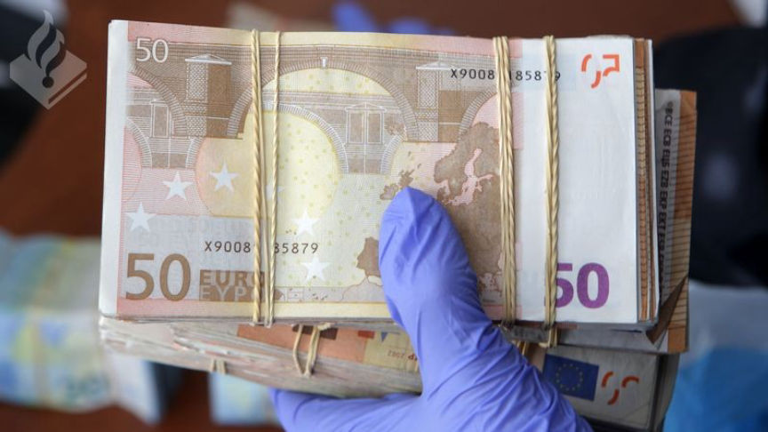
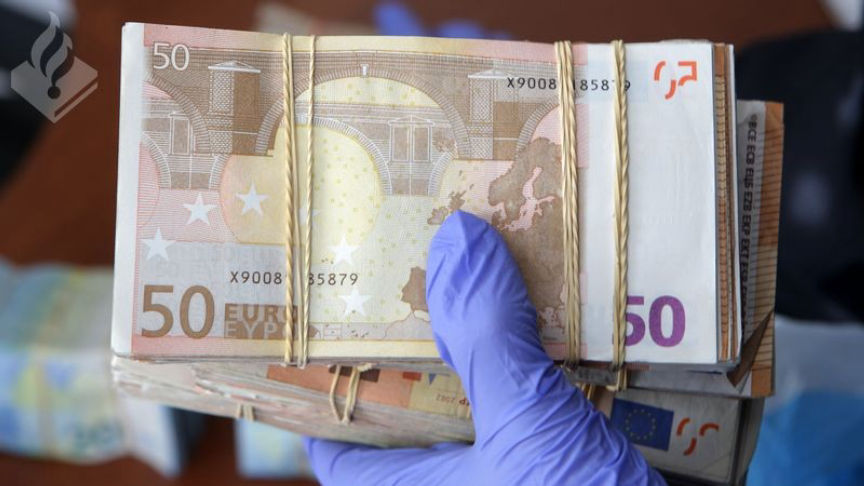

Dutchman Sold Counterfeit Banknotes on the Dark Web
~1 min read | Published on 2023-02-04, tagged Counterfeits, Currency using 240 words.
The Public Prosecutor's Office in The Hague asked for a five years and six months' imprisonment against a Dutchman convicted of producing and distributing counterfeit banknotes through the dark web.

According to the Dutch Public Prosecution Service, for at least three years, the 32-year-old defendant from The Hague made fake banknotes and sold them to buyers from all over Europe via the dark web.
Dutch authorities launched the investigation against the 32-year-old's counterfeiting operation in early 2020. The investigation resulted from information received from Austrian and German authorities. Customs authorities in the two countries had been intercepting packages of fake banknotes shipped from the Netherlands.
In the course of the investigation, the investigators intercepted some of the packages mailed by the defendant. Fingerprints found on a number of the intercepted packages reportedly led to the identification of the 32-year-old.
The investigators subsequently executed a search warrant on the 32-year-old's residence on July 12, 2022. The search led to the discovery of a fully equipped print shop for producing counterfeit banknotes. The investigators also found and seized approximately 57,000 in fake euros, approximately 96,000 kroner in counterfeit Swedish banknotes, and at least $9,000 in counterfeit dollars. An automatic firearm, a pistol, and ammunition were also seized from the defendant.
According to the prosecution, calculations by the Dutch Central Bank revealed that the 32-year-old produced and distributed counterfeit banknotes worth at least 800,000.
The defendant's sentencing hearing is set to take place in mid-February.

Counterfeit Euro Banknotes
According to the Dutch Public Prosecution Service, for at least three years, the 32-year-old defendant from The Hague made fake banknotes and sold them to buyers from all over Europe via the dark web.
Dutch authorities launched the investigation against the 32-year-old's counterfeiting operation in early 2020. The investigation resulted from information received from Austrian and German authorities. Customs authorities in the two countries had been intercepting packages of fake banknotes shipped from the Netherlands.
In the course of the investigation, the investigators intercepted some of the packages mailed by the defendant. Fingerprints found on a number of the intercepted packages reportedly led to the identification of the 32-year-old.
The investigators subsequently executed a search warrant on the 32-year-old's residence on July 12, 2022. The search led to the discovery of a fully equipped print shop for producing counterfeit banknotes. The investigators also found and seized approximately 57,000 in fake euros, approximately 96,000 kroner in counterfeit Swedish banknotes, and at least $9,000 in counterfeit dollars. An automatic firearm, a pistol, and ammunition were also seized from the defendant.
According to the prosecution, calculations by the Dutch Central Bank revealed that the 32-year-old produced and distributed counterfeit banknotes worth at least 800,000.
The defendant's sentencing hearing is set to take place in mid-February.